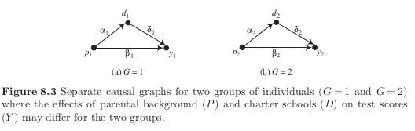

Download the notebook here!
Interactive online version: 
Self-selection, heterogeneity, and causal graphs¶
Introduction¶
Alternatives to back-door identification
The next chapters deal with:
instrumental variables
front-door identification with causal mechanisms
conditioning estimators using pretreatment variables
Why do we need to consider alternatives?
\(\rightarrow\)selection on unobservables / nonignorability of treatment
What makes an unobservable?
simple confounding, stable unobserved common cause of treatment and outcome variable
subtle confounding, direct self-selection into the treatment based on accurate perceptions of the individual level treatment effect
Selection on unobservables as a combination of two features:
treatment effect heterogeneity
self-selection
Nonignorability and selection on the unobservables¶
Selection on observables¶

Selection on unobservables¶

Selection on the unobservables and the utility of additional posttreatment measures of the outcome¶
Catholic school example
claim that Catholic schools are more effective than public schools in teaching mathematics and reading to equivalent High School students.
conditioning on family background and motivation to learn
those enrolling into Catholic school have the most to gain from doing so
Notation
\(Y_{10}\), observed score on standardized achievement test given in tenth grade
\(D\) causal variable taking value one if student attends Catholic school
\(U\) unobserved motivation to learn, differences in home environment, anticipation of causal effect itself
\(X\) determinants of achievement tests that have no direct causal effect on school sector or selection
\(O\) ultimate background variables that affect all other variables in graph
We proceed in two steps:
assess identification for given directed graphs
examine structure of directed graph itself

We cannot identify the causal effect of \(D\) on \(Y_{10}\) in subfigure (a) but in subfigure (b). However, at what cost?
\(Y_{10}\) blocks all back-door paths, however it does not satisfy the Condition 2 of the back-door criterion. As such, it adjusts away some of the total causal effect of \(D\) on \(Y_{12}\).
Let \(E\) denote an student’s ability for test taking and allow for the direct effect of \(U\) on bow both achievement scores. Then maybe this is a more complete picture?

Back-door adjustment by \(Y_{10}\) ineffective again after revisiting economic implications of the imposed graph. In fact, \(Y_{10}\) is now a collider variable that induces a noncausal dependence.
Panel Data Demonstration¶
The motivation behind this example is simply to show that we cannot learn anything about the underlying causal effect with the conventional strategies and how we model self-selection in the data generating process.
[2]:
def get_propensity_score(o, u):
"""Get the propensity score."""
level = -3.8 + o + u
return np.exp(level) / (1 + np.exp(level))
def get_treatment_status(o, u):
"""Sampling treatment status"""
# Following the causal graph, the treatment indicator is only a function
# of the background characteristics O and the unobservable U.
p = get_propensity_score(o, u)
return np.random.choice([1, 0], p=[p, 1 - p])
def get_covariates():
""" Get covariates."""
o, e = np.random.normal(size=2)
x, u = o + np.random.normal(size=2)
return o, u, x, e
[3]:
def get_potential_outcomes(grade, o, x, e, u, scenario=0, selection=False):
"""Get potential outcomes.
Sampling of potential outcome of an individual for the panel data demonstration.
Args:
grade: an integer for the grade the individual is in.
o, x, e : floats of observable characteristics.
u: a float of unobservable characteristic.
scenario: an integer for the scenario: (0) no role for E, (1) role for E.
selection: a boolean indicating whether there is selection on unobservables.
Returns:
A tuple of potential outcomes (Y_0, Y_1).
"""
# We want to make sure we only pass in valid input.
assert scenario in range(2)
assert selection in [True, False]
assert grade in [10, 11, 12]
# There is a natural progression in test scores.
level = dict()
level[10] = 100
level[11] = 101
level[12] = 102
if scenario == 0:
y_0 = level[grade] + o + u + x + np.random.normal()
elif scenario == 1:
y_0 = level[grade] + o + u + x + e + np.random.normal()
else:
raise NotImplementedError
# Sampling of treatment effects. The key difference for selection on unobservables is in how
# the overall treatment effect depends on the unobservable U that also affects the choice
# probability. This was the major criticism of Coleman's work.
delta_1 = np.random.normal(loc=10, scale=1)
if selection:
delta_2 = np.random.normal(loc=u)
else:
delta_2 = np.random.normal()
if grade == 10:
y_1 = y_0 + delta_1 + delta_2
elif grade == 11:
y_1 = y_0 + (1 + delta_1) + delta_2
elif grade == 12:
y_1 = y_0 + (2 + delta_1) + delta_2
return y_0, y_1
[4]:
def get_sample_panel_demonstration(num_agents=1000, scenario=0, selection=False, seed=123):
"""Get sample for demonstration.
Create a random sample for the demonstration of the usefulness of (or lack thereof) of having
additional posttreatment measures of the outcome.
Args:
num_agents: an integer for the number of agents in the sample
scenario: an integer that indicates whether to include E as a determinant of test scores
selection: a boolean variable indicating whether selection on unobservables is an issue
seed: an integer setting the random seed
Returns:
A dataframe with the simulated sample.
"""
# We first initialize an empty DataFrame that holds the information for each individual
# and each time period.
columns = ["Y", "D", "O", "X", "E", "U", "Y_1", "Y_0"]
index = product(range(num_agents), [10, 11, 12])
index = pd.MultiIndex.from_tuples(index, names=("Identifier", "Grade"))
df = pd.DataFrame(columns=columns, index=index)
# Now we are ready to simulate the sample with the desired characteristics.
np.random.seed(seed)
for i in range(num_agents):
o, u, x, e = get_covariates()
d = get_treatment_status(o, u)
for grade in [10, 11, 12]:
y_0, y_1 = get_potential_outcomes(grade, o, x, e, u, scenario, selection)
y = d * y_1 + (1 - d) * y_0
df.loc[(i, grade), :] = [y, d, o, x, e, u, y_1, y_0]
# Finally some type definitions for pretty output.
df = df.astype(np.float)
df = df.astype({"D": np.int})
return df
[5]:
num_agents, scenario, selection = 1000, 0, False
df = get_sample_panel_demonstration(num_agents, scenario, selection)
df.head()
/home/sebastian/anaconda3/envs/grmpy/lib/python3.7/site-packages/ipykernel_launcher.py:36: DeprecationWarning: `np.float` is a deprecated alias for the builtin `float`. To silence this warning, use `float` by itself. Doing this will not modify any behavior and is safe. If you specifically wanted the numpy scalar type, use `np.float64` here.
Deprecated in NumPy 1.20; for more details and guidance: https://numpy.org/devdocs/release/1.20.0-notes.html#deprecations
/home/sebastian/anaconda3/envs/grmpy/lib/python3.7/site-packages/ipykernel_launcher.py:37: DeprecationWarning: `np.int` is a deprecated alias for the builtin `int`. To silence this warning, use `int` by itself. Doing this will not modify any behavior and is safe. When replacing `np.int`, you may wish to use e.g. `np.int64` or `np.int32` to specify the precision. If you wish to review your current use, check the release note link for additional information.
Deprecated in NumPy 1.20; for more details and guidance: https://numpy.org/devdocs/release/1.20.0-notes.html#deprecations
[5]:
| Y | D | O | X | E | U | Y_1 | Y_0 | ||
|---|---|---|---|---|---|---|---|---|---|
| Identifier | Grade | ||||||||
| 0 | 10 | 95.841898 | 0 | -1.085631 | -0.802652 | 0.997345 | -2.591925 | 105.586179 | 95.841898 |
| 11 | 98.499140 | 0 | -1.085631 | -0.802652 | 0.997345 | -2.591925 | 106.765876 | 98.499140 | |
| 12 | 97.072351 | 0 | -1.085631 | -0.802652 | 0.997345 | -2.591925 | 110.597380 | 97.072351 | |
| 1 | 10 | 97.544210 | 0 | -0.619191 | -0.042445 | -0.769433 | -0.492665 | 108.934451 | 97.544210 |
| 11 | 100.583068 | 0 | -0.619191 | -0.042445 | -0.769433 | -0.492665 | 112.137966 | 100.583068 |
What is the average treatment effect and how does it depend on the presence of selection?
[6]:
num_agents, scenario = 1000, 0
# This setup allows to freeze some arguments of the function
# that do not change during the analysis.
from functools import partial # noqa: E402
simulate_sample = partial(get_sample_panel_demonstration, num_agents, scenario)
for selection in [False, True]:
print(f" Selection {selection}")
df = simulate_sample(selection)
for grade in [10, 12]:
df_grade = df.loc[(slice(None), grade), :]
stat = (df_grade["Y_1"] - df_grade["Y_0"]).mean()
print(f" Grade {grade}: ATE {stat:5.3f}")
print("\n")
Selection False
/home/sebastian/anaconda3/envs/grmpy/lib/python3.7/site-packages/ipykernel_launcher.py:36: DeprecationWarning: `np.float` is a deprecated alias for the builtin `float`. To silence this warning, use `float` by itself. Doing this will not modify any behavior and is safe. If you specifically wanted the numpy scalar type, use `np.float64` here.
Deprecated in NumPy 1.20; for more details and guidance: https://numpy.org/devdocs/release/1.20.0-notes.html#deprecations
/home/sebastian/anaconda3/envs/grmpy/lib/python3.7/site-packages/ipykernel_launcher.py:37: DeprecationWarning: `np.int` is a deprecated alias for the builtin `int`. To silence this warning, use `int` by itself. Doing this will not modify any behavior and is safe. When replacing `np.int`, you may wish to use e.g. `np.int64` or `np.int32` to specify the precision. If you wish to review your current use, check the release note link for additional information.
Deprecated in NumPy 1.20; for more details and guidance: https://numpy.org/devdocs/release/1.20.0-notes.html#deprecations
Grade 10: ATE 10.090
Grade 12: ATE 12.014
Selection True
Grade 10: ATE 10.116
Grade 12: ATE 12.039
The average treatment effects are unaffected by selection. But how does the picture change when we look at subsets of the population?
[7]:
for selection in [False, True]:
print(f" Selection {selection}")
df = simulate_sample(selection)
for grade in [10, 12]:
subset = df.loc[(slice(None), grade), :]
stat = list()
for status in range(2):
df_status = subset.query(f"D == {status}")
stat.append((df_status["Y_1"] - df_status["Y_0"]).mean())
print(" Grade {:}: ATC {:7.3f} ATT {:7.3f}".format(grade, *stat))
print("\n")
Selection False
/home/sebastian/anaconda3/envs/grmpy/lib/python3.7/site-packages/ipykernel_launcher.py:36: DeprecationWarning: `np.float` is a deprecated alias for the builtin `float`. To silence this warning, use `float` by itself. Doing this will not modify any behavior and is safe. If you specifically wanted the numpy scalar type, use `np.float64` here.
Deprecated in NumPy 1.20; for more details and guidance: https://numpy.org/devdocs/release/1.20.0-notes.html#deprecations
/home/sebastian/anaconda3/envs/grmpy/lib/python3.7/site-packages/ipykernel_launcher.py:37: DeprecationWarning: `np.int` is a deprecated alias for the builtin `int`. To silence this warning, use `int` by itself. Doing this will not modify any behavior and is safe. When replacing `np.int`, you may wish to use e.g. `np.int64` or `np.int32` to specify the precision. If you wish to review your current use, check the release note link for additional information.
Deprecated in NumPy 1.20; for more details and guidance: https://numpy.org/devdocs/release/1.20.0-notes.html#deprecations
Grade 10: ATC 10.098 ATT 10.012
Grade 12: ATC 12.001 ATT 12.134
Selection True
Grade 10: ATC 9.958 ATT 11.655
Grade 12: ATC 11.861 ATT 13.776
/home/sebastian/anaconda3/envs/grmpy/lib/python3.7/site-packages/ipykernel_launcher.py:36: DeprecationWarning: `np.float` is a deprecated alias for the builtin `float`. To silence this warning, use `float` by itself. Doing this will not modify any behavior and is safe. If you specifically wanted the numpy scalar type, use `np.float64` here.
Deprecated in NumPy 1.20; for more details and guidance: https://numpy.org/devdocs/release/1.20.0-notes.html#deprecations
/home/sebastian/anaconda3/envs/grmpy/lib/python3.7/site-packages/ipykernel_launcher.py:37: DeprecationWarning: `np.int` is a deprecated alias for the builtin `int`. To silence this warning, use `int` by itself. Doing this will not modify any behavior and is safe. When replacing `np.int`, you may wish to use e.g. `np.int64` or `np.int32` to specify the precision. If you wish to review your current use, check the release note link for additional information.
Deprecated in NumPy 1.20; for more details and guidance: https://numpy.org/devdocs/release/1.20.0-notes.html#deprecations
[8]:
for grade in [10, 12]:
for model in ["Y ~ D", "Y ~ D + X + O"]:
df_grade = df.loc[(slice(None), grade), :]
rslt = smf.ols(formula=model, data=df_grade).fit()
stat = rslt.params["D"]
print("Grade: {} Model: {:}".format(*[grade, model]))
print(" Estimated Treatment Effect: {:5.3f}\n".format(stat))
Grade: 10 Model: Y ~ D
Estimated Treatment Effect: 15.767
Grade: 10 Model: Y ~ D + X + O
Estimated Treatment Effect: 12.181
Grade: 12 Model: Y ~ D
Estimated Treatment Effect: 17.849
Grade: 12 Model: Y ~ D + X + O
Estimated Treatment Effect: 14.331
None of the estimates come even close to our parameters of interest.
Causal graphs for complex patterns of self-selection¶
We want to make sure that complex patterns of self-selection can be represented by directed graphs.
Separate graphs for separate latent classes¶
Groups
\(G=1\), selection of schools mainly for lifestyle reasons, proximity to home and taste for school cultures
\(G=2\), selection of schools to maximize expected achievement

What are the economic mechanisms are represented by each of the arrows? Why would we expect them to differ across the two groups?
families of the second group are more likely to send their children to charter schools \(d_2 > d_1\)
parents with higher levels of education are more likely to send their children to charter schools as they value distinctive forms of education \(\alpha_1, \alpha_2 > 0\) and are able to support their children with their homework \(\beta_1, \beta_2 > 0\).
existing research suggests \(\delta_1, \delta_2 > 0\) and \(\delta_2 > \delta_1\) as families in second group put more effort in matching their children to schools
What happens if we block the back-door path by conditioning in \(P\) but ignore the existence of two latent classes? If \(P\) is associated with latent class membership, then we do not properly weigh the stratum-specific treatment effects as there is heterogeneity within strata.
A single graph that represents all latent classes¶
We now let \(G\) capture effect heterogeneity.

We outline more and more elaborate ideas about the economic mechanisms that determine class membership and how they modify the structure of the causal graph.
no arrow from :math:`P` to :math:`G` implies that students with students who have higher levels of education are no more likely to know of the educational policy dialogue hat claims that charter schools have advantages.
no arrow from :math:`G` to :math:`Y` implies that there is in fact (on average) no treatment effect heterogeneity.

Self-selection into the latent class¶
We now elaborate on the mechanism that determines class membership. We assume that \(G\) is at least in part determined by a variable that measures a family’s subjective expectations of their child’s likely benefit from attending a charter school instead of a regular school.

However, these expectations are potentially based on access to information that is often related to parental background.